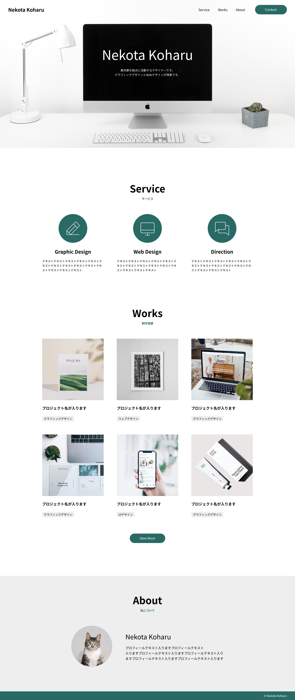

訓練校｜全6時間の集中授業

時刻をクリックすると、その内容の詳しい解説に飛べます。★★★＝特に重要。
※この日の録画は約2時間38分（実習デーで前半中心）。最後は「続きは明日」で終了。
名前に /（スラッシュ）を入れると Bold/12px-Bold のようにフォルダ分けできる（教科書82p）。
テキスト初期の黒は「ただの黒」。登録した黒スタイルを当て直すと一括管理できる（忘れがち）。
教科書はスタイル→部品→デザインの順。でも実際はトップページを先に作る方が現実的。
ボタンは何種類も増える。ボタンでなく メイン/配布ボタン のように役割で分けて命名。
画像を直に置くと <img> 扱い。フレームの「塗り」に入れると background cover になる。
メインビジュアルの高さに −94 と入れてヘッダー分を引く。画面ぴったりに。
オートレイアウト＝要素の中央／タイプグラフィ＝文字の中央。別物。
セクションの上下余白は 160px など全部同じ数字に。バラつくと下手に見える。
余白が均等なら一括オートレイアウト。不均等なら2個ずつセットにして入れ子。
丸アイコンは楕円ツールでなくフレームで作る＝中の <img> の親要素になる。
前回までで色・フォントのスタイルを登録した。数が増えるとレイヤーパネルが渋滞するので、まずフレームで色ごと・太さごとにまとめて名前をつける（ブラック、Aカラー、Regular／Bold など）。
/ を入れるとディレクトリ（フォルダ）が作れる。例：Bold / 12px-Bold とすると「Bold」フォルダの中に入る。
ただし1ページ〜10ページ以下の小規模サイトなら、わざわざ階層化しなくてもOK。やるなら Bold / Regular 、あるいは EN / JP（英語・日本語）くらい。プロジェクト次第。
教科書は ①スタイル登録 → ②コンポーネント作成 → ③デザイン の順。でも前回も言った通り、初心者には現実的でない。
まだサイトを作ったことがないと、どんなコンポーネントが必要かまだ見えない。フォントの文字感覚も最初から決めるのは難しい。だから実際は、まずトップページだけ作ってみる。スタイルもコンポーネントも一旦気にしない。そこから使った色やフォントを登録していく。── A先生
この授業の進め方 今回は教科書のサンプル（猫田小春のポートフォリオ）をなぞって作るので、教科書の順番で進める。ただし要所で「実際の現場ではこうする」という補足が入る。
サイトで繰り返し使うパーツを、ひとつずつ部品化していく。共通の作法はオートレイアウト → 塗り/パディング → コンポーネント化 → テキストプロパティ。
ボタン と付けると2個目の名前に困る。だから メイン/配布ボタン プライマリ のように役割で分けて命名しておく。
5時間目から実際のデザイン制作（教科書105p〜）。まずデスクトップのフレームを作り、名前を トップPC に変え、高さを縦にビヨーンと伸ばす。
「画面の高さいっぱい」に見せたいので、もう一度デスクトップのフレームを出して中に入れ（＝モニター高さの目安）、名前を MV に。そのフレームの高さ欄に -94（ヘッダーの高さ）と打つと、ヘッダー分を引いた高さになる。ヘッダーの真下にピタッと置けば画面ぴったりのファーストビューに。
<img> 要素扱いbackground-size: cover と同じ状態※ 教科書は全部「画像を直に配置」だが、実際の制作では背景画像（cover）で入れる方がスマート、と先生の補足。
タイトル「Nekota Koharu」と説明文を中央に置くとき、「中央揃え」が2種類あるのがつまずきポイント。
| 揃えたいもの | 使う場所 | CSSでいうと |
|---|---|---|
| 要素（ブロック）の中央 | オートレイアウトの整列（マス目アイコン） | justify-content / align-items |
| 文字そのものの中央 | タイプグラフィの「中央揃え」 | text-align: center |
オートレイアウトで縦並び＆中央にしても、文字が左揃えのままのことがある。その時はテキストレイヤーを選んで、タイプグラフィから中央揃え（text-align）を当てる。位置はモニターの真ん中あたりで大体でOK（コーディングでビシッと合わせるのは厳しいので）。
教科書113p〜。Graphic Design / Web Design / Direction の3カラムを作る。考え方はCSSの display: flex。
大きいセクションは最後。まずタイトル・アイコン・テキストなど細かいものから作る。セクションタイトルは他でも使い回すのでコンポーネント化＋テキストプロパティ（EN/JP の2か所）にしておく。
<img>（SVG）が入る。リセットCSSで img { width:100%; display:block } が当たることが多く、緑の丸＝imgの親要素になる。だからFigmaでもフレームで囲んで中に画像を置くのがコーディング的にスマート。140×140固定・角丸140で正円に。
フレームやオートレイアウトを選ぶと、右パネルにその中で使われている色の一覧が出る。ここから黒→白などをまとめて変更できる。横の的（まと）アイコンで「その色を使っているレイヤー」を選択することも可能。
今回のアイテムは画像↔タイトル＝24px、タイトル↔本文＝16pxの不均等なので、入れ子で作る。アイテム同士は64px間隔・幅300px。
セクションの上の余白は 160px。これは適当ではなく、8の倍数を基準にしている。
margin-top になる。全セクションを160で揃えておけば、section にまとめて160を当てられてコードが楽。毎回 160／150／132／79 とバラバラだと、コード量が増え、均等性のないデザインに見える。
余白がバラバラだと、センスのいい人か下手くその2択になっちゃう。で、多分下手くそが作ったようなデザインに生まれちゃうので、ここは大体同じ数字にしておくのを強くおすすめします。── A先生
さらに本格的にするなら、セクションを2枚のオートレイアウトで囲む（中身のコンテナ＋外側のセクション幅1440・上下パディング160）。こうすると、コーディング時に「ここに160の余白が入っている」とパッと見で分かる。
説明文の幅をいくつにするか。先生は「1文字14px × 文字数」で当たりをつける（実際は計算ミスで、教科書の正解は300px）。ピクセルだけでなく「何文字分」という幅感も大事。
教科書では SectionTitle のように単語の頭を大文字（キャメルケース）にしている。でもこれは絶対ではない。
section_title）」などのルールがあり、教科書通りに大文字で作ると注意される。教科書＝絶対ではない。
最後はWorks（制作実績）のカードづくり。1枚のカードを作ってコンポーネント化するところまで。
ワークスアイテム と命名 → コンポーネント化| 用語 | 意味（このクラスでの理解） |
|---|---|
| スタイルの階層（スラッシュ） | スタイル名に / を入れてフォルダ分け。例 Bold/12px-Bold |
| グローバルナビゲーション | 全ページ共通のヘッダー内ナビ。ロゴ＋リンク＋Contactボタン |
| コピーライト表記 | © ＋ 制作年 ＋ 著作者名（最低3つ）。フッターに置く |
| ファーストビュー | ページを開いて最初に見える画面（ヘッダー＋メインビジュアル） |
| メインビジュアル（MV） | トップの主役画像エリア。高さ＝モニター−ヘッダー |
| 塗りで画像配置 | フレームの塗りに画像を入れる＝background-size:cover。直置きの <img> と区別 |
| 2種類の中央揃え | オートレイアウト＝要素の中央／タイプグラフィ＝文字の中央(text-align) |
| 8の倍数 | 余白の基準。セクション上下は160などで全部揃える |
| 命名規則 | キャメル/スネーク/小文字統一など。プロジェクトごとに決める |
| 3カラム / コンテナ / アイテム | flexの考え方。親＝コンテナ、横並びの各列＝アイテム |
| 選択範囲の色 | 選択した要素の中で使われている色一覧。一括変更できる |
| hug（コンテンツを内包） | 中身の大きさに合わせる。fit-content |
| fill（コンテナに合わせて拡大） | 親の幅に合わせる。width:100%。余白はパディングで取る |
| テキストプロパティ／バリアント | 前回の復習。文言の差し替え／状態・種類違いのパターン |
授業で作りかけた分＝そのまま続き。猫田小春のポートフォリオを上から完成させていく。
まずはトップページだけ作ってみる。スタイルもコンポーネントも一旦気にしない。そこから使った色やフォントを登録していく。── 制作の現実的な順番
4000pxぴったりとか誰もやらないです。高さは適当に伸ばす。ただし幅は変えちゃダメですからね。── フレームの高さと幅
余白がバラバラだと、センスのいい人か下手くその2択になっちゃう。ここは大体同じ数字にしておくのを強くおすすめします。── セクションの余白
教科書が絶対というわけじゃない。命名規則はプロジェクトごとにバラバラ。これは強くどこかにメモっといてください。── 命名規則について